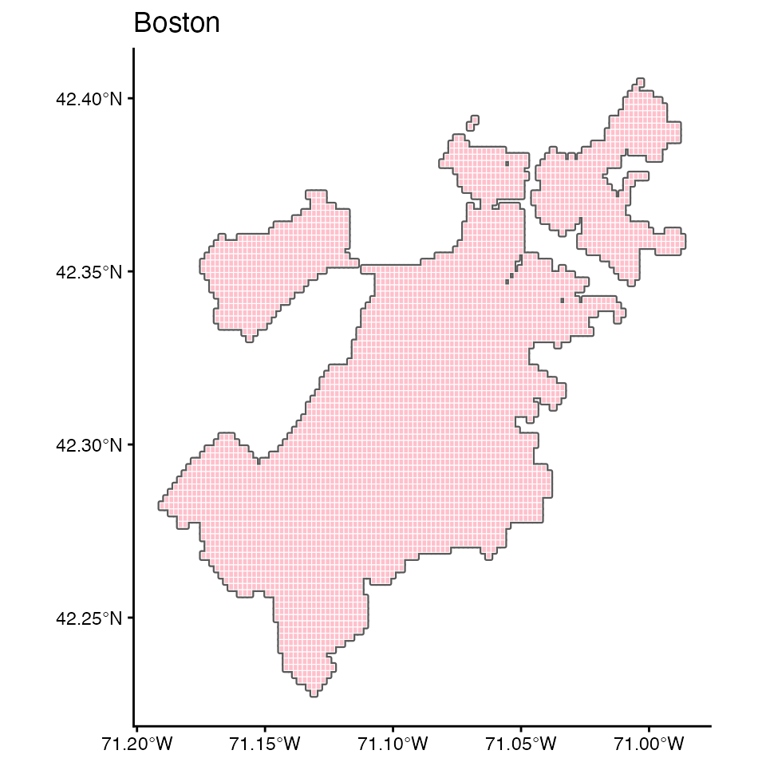
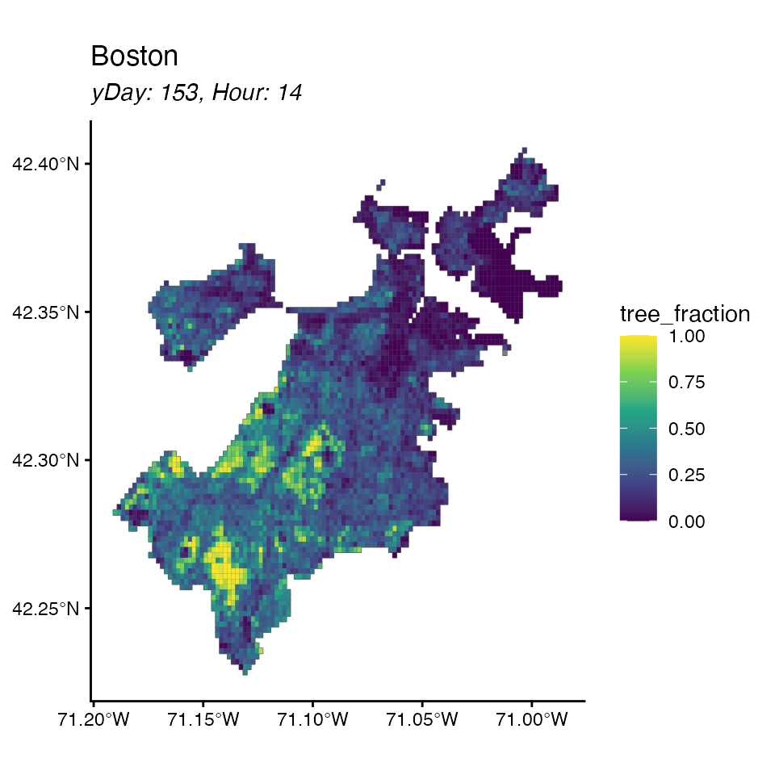
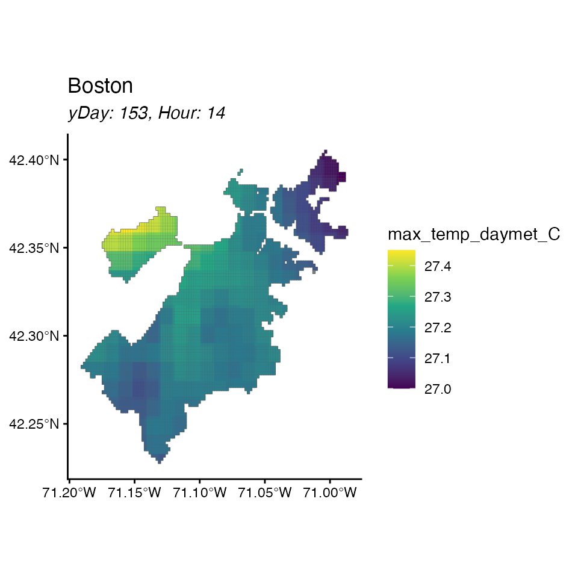
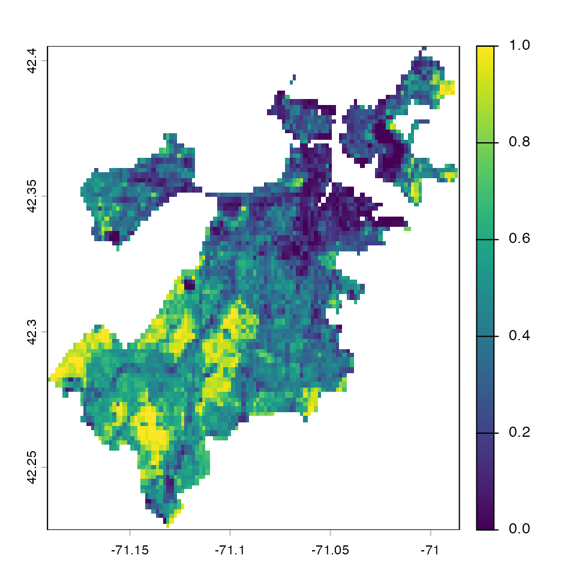
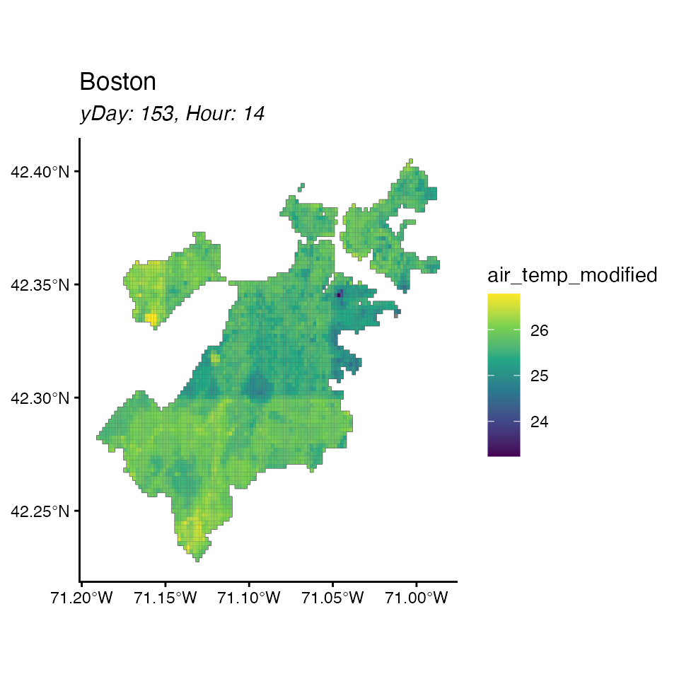
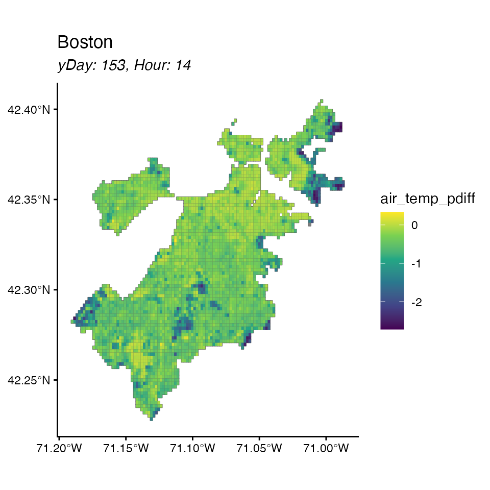

Impacts of Boston Tree Cover Changes on Air Temperature
smithCEE2025.RmdA package for the functions in Smith 2025. In this vignette, we demonstrate how to use the package to investigate the impact of changes in tree-cover on air temperature.
Load the data
library(smithCEE2025)
#> Loading required package: sf
#> Linking to GEOS 3.13.0, GDAL 3.8.5, PROJ 9.5.1; sf_use_s2() is TRUE
#> Loading required package: data.table
#> Loading required package: ggplot2
#> Loading required package: terra
#> terra 1.8.86
#>
#> Attaching package: 'terra'
#> The following object is masked from 'package:data.table':
#>
#> shift
#> Loading required package: raster
#> Loading required package: sp
#> Loading required package: exactextractrLoad the data
bos <- retrieve_output()
#> city: boston
#> ... load shapefile
#> ... load data
#> ... load coefficientsLook at the object
bos
#> <cityModel>
#> city name: boston
#> shapefile: 4219 grid cells; geometry: POLYGON
#> features: 1130424 rows x 16 cols
#> coefficients: 9
#> (Intercept), tree_fraction, albedo, wind_m_s, wtr_dist_m, solar_w_m2, max_temp_daymet_C, hod, I(hod^2)And look specifically at each part: the features
head(bos)
#> Key: <id>
#> id hod doy index max_temp_daymet_C minT_daymet wind_m_s solar_w_m2
#> <num> <num> <num> <char> <num> <num> <num> <num>
#> 1: 1 14 153 1_153 27.02 11.36 2.85 714.2
#> 2: 1 14 154 1_154 24.26 14.46 4.66 440.6
#> 3: 1 14 155 1_155 26.47 17.02 3.12 370.2
#> 4: 1 14 156 1_156 32.25 15.34 6.39 891.9
#> 5: 1 14 157 1_157 33.90 18.19 4.80 896.0
#> 6: 1 14 158 1_158 34.60 20.08 6.29 331.6
#> prev_day_max next_day_min pop albedo albedo_new tree_fraction tree_new
#> <num> <num> <num> <num> <num> <num> <num>
#> 1: 24.17 14.46 46.87 0.136 0.136 0.14 24.941
#> 2: 27.02 17.02 46.87 0.136 0.136 0.14 24.941
#> 3: 24.26 15.34 46.87 0.136 0.136 0.14 24.941
#> 4: 26.47 18.19 46.87 0.136 0.136 0.14 24.941
#> 5: 32.25 20.08 46.87 0.136 0.136 0.14 24.941
#> 6: 33.90 22.08 46.87 0.136 0.136 0.14 24.941
#> wtr_dist_m
#> <num>
#> 1: 987.084
#> 2: 987.084
#> 3: 987.084
#> 4: 987.084
#> 5: 987.084
#> 6: 987.084the shapefile
head(bos$shapefile)
#> Simple feature collection with 6 features and 1 field
#> Geometry type: POLYGON
#> Dimension: XY
#> Bounding box: xmin: -71.00782 ymin: 42.39999 xmax: -71.00064 ymax: 42.40538
#> Geodetic CRS: WGS 84
#> id geometry
#> 1 1 POLYGON ((-71.00423 42.4053...
#> 2 2 POLYGON ((-71.00603 42.4035...
#> 3 3 POLYGON ((-71.00782 42.4017...
#> 4 4 POLYGON ((-71.00603 42.4017...
#> 5 5 POLYGON ((-71.00423 42.4017...
#> 6 6 POLYGON ((-71.00243 42.4017...and the coefficients.
print(bos$coefficients)
#> (Intercept) tree_fraction albedo wind_m_s
#> -3.323218e+01 -7.086473e-01 -3.858735e+00 -6.789460e-02
#> wtr_dist_m solar_w_m2 max_temp_daymet_C hod
#> 2.064495e-06 3.694630e-03 9.820124e-01 3.909074e+00
#> I(hod^2)
#> -1.201507e-01You can plot several ways: just by cell id
plot(bos)
#> No feature selected, plotting cell id
Or by a specific feature
plot(bos, feature = 'tree_fraction')
And you can zoom in on a specific day
plot(bos, feature = 'max_temp_daymet_C', hod = 14, doy = 153)
Load a raster file and make changes
First convert your .tif to a raster object. Note in this example we’ve already clipped it to the Boston extent, but the code doesn’t assume that it is clipped.
image_path <- system.file("extdata",
"treeCanopy_sample.tif",
package = "smithCEE2025")
tree_raster <- rast(image_path)Tree canopy in particular should be represented as a proportion and not percent for consistency with data used in model fit
plot(tree_raster)
tree_raster <- tree_raster/100
plot(tree_raster)
Now, pass this in and see the difference it makes for air
temperature. this will add air_temp_baseline and
air_temp_modified as a result of the changes that were
made.
new_bos <- what_if(bos, 'tree_fraction', tree_raster)
#> ... validation
#> ... extract raster
#> Warning in what_if(bos, "tree_fraction", tree_raster): some NA raster cells are
#> NA
#> | | | 0% | | | 1% | |= | 1% | |= | 2% | |== | 2% | |== | 3% | |== | 4% | |=== | 4% | |=== | 5% | |==== | 5% | |==== | 6% | |===== | 6% | |===== | 7% | |===== | 8% | |====== | 8% | |====== | 9% | |======= | 9% | |======= | 10% | |======= | 11% | |======== | 11% | |======== | 12% | |========= | 12% | |========= | 13% | |========= | 14% | |========== | 14% | |========== | 15% | |=========== | 15% | |=========== | 16% | |============ | 16% | |============ | 17% | |============ | 18% | |============= | 18% | |============= | 19% | |============== | 19% | |============== | 20% | |============== | 21% | |=============== | 21% | |=============== | 22% | |================ | 22% | |================ | 23% | |================ | 24% | |================= | 24% | |================= | 25% | |================== | 25% | |================== | 26% | |=================== | 26% | |=================== | 27% | |=================== | 28% | |==================== | 28% | |==================== | 29% | |===================== | 29% | |===================== | 30% | |===================== | 31% | |====================== | 31% | |====================== | 32% | |======================= | 32% | |======================= | 33% | |======================= | 34% | |======================== | 34% | |======================== | 35% | |========================= | 35% | |========================= | 36% | |========================== | 36% | |========================== | 37% | |========================== | 38% | |=========================== | 38% | |=========================== | 39% | |============================ | 39% | |============================ | 40% | |============================ | 41% | |============================= | 41% | |============================= | 42% | |============================== | 42% | |============================== | 43% | |============================== | 44% | |=============================== | 44% | |=============================== | 45% | |================================ | 45% | |================================ | 46% | |================================= | 46% | |================================= | 47% | |================================= | 48% | |================================== | 48% | |================================== | 49% | |=================================== | 49% | |=================================== | 50% | |=================================== | 51% | |==================================== | 51% | |==================================== | 52% | |===================================== | 52% | |===================================== | 53% | |===================================== | 54% | |====================================== | 54% | |====================================== | 55% | |======================================= | 55% | |======================================= | 56% | |======================================== | 56% | |======================================== | 57% | |======================================== | 58% | |========================================= | 58% | |========================================= | 59% | |========================================== | 59% | |========================================== | 60% | |========================================== | 61% | |=========================================== | 61% | |=========================================== | 62% | |============================================ | 62% | |============================================ | 63% | |============================================ | 64% | |============================================= | 64% | |============================================= | 65% | |============================================== | 65% | |============================================== | 66% | |=============================================== | 66% | |=============================================== | 67% | |=============================================== | 68% | |================================================ | 68% | |================================================ | 69% | |================================================= | 69% | |================================================= | 70% | |================================================= | 71% | |================================================== | 71% | |================================================== | 72% | |=================================================== | 72% | |=================================================== | 73% | |=================================================== | 74% | |==================================================== | 74% | |==================================================== | 75% | |===================================================== | 75% | |===================================================== | 76% | |====================================================== | 76% | |====================================================== | 77% | |====================================================== | 78% | |======================================================= | 78% | |======================================================= | 79% | |======================================================== | 79% | |======================================================== | 80% | |======================================================== | 81% | |========================================================= | 81% | |========================================================= | 82% | |========================================================== | 82% | |========================================================== | 83% | |========================================================== | 84% | |=========================================================== | 84% | |=========================================================== | 85% | |============================================================ | 85% | |============================================================ | 86% | |============================================================= | 86% | |============================================================= | 87% | |============================================================= | 88% | |============================================================== | 88% | |============================================================== | 89% | |=============================================================== | 89% | |=============================================================== | 90% | |=============================================================== | 91% | |================================================================ | 91% | |================================================================ | 92% | |================================================================= | 92% | |================================================================= | 93% | |================================================================= | 94% | |================================================================== | 94% | |================================================================== | 95% | |=================================================================== | 95% | |=================================================================== | 96% | |==================================================================== | 96% | |==================================================================== | 97% | |==================================================================== | 98% | |===================================================================== | 98% | |===================================================================== | 99% | |======================================================================| 99% | |======================================================================| 100%
#> Warning in what_if(bos, "tree_fraction", tree_raster): check basis
#> ... apply model
#> Warning in what_if(bos, "tree_fraction", tree_raster): hard-coded matrix
#> variable namesAnd now look at the change it made
plot(new_bos, "air_temp_baseline", hod = 14, doy = 153)
plot(new_bos, "air_temp_modified", hod = 14, doy = 153)
Slightly cooler - nice! But a little hard to see …
If you want to do your own calculations and plot, here’s how
# say diff is new - old
new_bos$features$air_temp_diff <-
new_bos$features$air_temp_modified -
new_bos$features$air_temp_baseline
# and percent diff
new_bos$features$air_temp_pdiff <-
new_bos$features$air_temp_diff /
new_bos$features$air_temp_baseline * 100
# and then plot
plot(new_bos, "air_temp_pdiff", hod = 14, doy = 153)
Now its easier to see where the differences are for a specific day